The Forecaster
The Forecaster watches the crops around it and writes down what they do. Give it a model that has learned how crops grow, and if the model's forecasts match the field, it runs the field ahead: it draws each crop's next looks from the model and makes them so.
 Crafting
Crafting


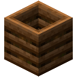

Watching
Every twenty seconds the Forecaster looks at every crop within four blocks of it, on its own level and one above or below: wheat, carrots, potatoes, and any crop that grows through the same seven ages. Each crop gets a line: its age at every look, from 0 when planted to 7 when ripe, ending once it has been seen ripe twice.
00000011111111122222223333333334444445555555666666677
Only growth a crop made by itself counts. A crop that is harvested, trampled or fed bone meal starts a new line, so its lines only ever hold what the field really does. Put a Field Log in the Log slot to keep a copy.
Crafting (Shapeless)
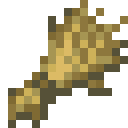
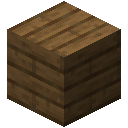
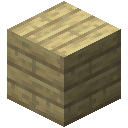
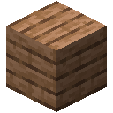
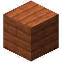
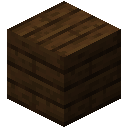
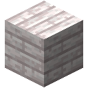
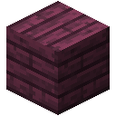
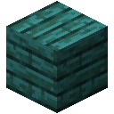
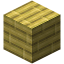
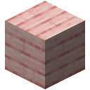
A model of a field
A model that has learned what happens next is a model of its world, and the Forecaster asks for nothing more. Train one on Forecasting at a Model Core: the Growth Dataset holds the lines of many fields.
Crafting (Shapeless)
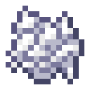
How fast a crop grows depends on its field: wet farmland or dry, in tidy rows or crowded. A model that learned from many fields expects the growth of an average one. That is close enough on some fields and far off on others.
To forecast your own field, train on it. Put the Forecaster's Field Log in a data slot of the Core, on its own, and the model learns this field's pace. It gets worse at fields in general, and may even fail the Forecasting test: that is the price of fitting one field well. Beside the Growth Dataset, the log only pulls the model halfway.
Calibration
A forecast is only worth acting on if it is right on average. Before it runs anything, once its crops have grown 100 ages by themselves, the Forecaster checks the model against everything it watched, lines still being written included: the crops that finish first are the ones that happened to grow fastest, so finished lines alone would flatter a model that expects too much. At every look it adds up the growth the model expected, and divides by the growth there was:
- Within 11% of 1, it runs the field four looks for every one.
- Within 25%, two.
- Further off, it refuses the model.
The screen shows the field from above, then the growth per look from each age: amber for what the field did, teal for what the model expected. A model that expects too much from young crops, or too little from old ones, shows it there. A refused model is checked again each time the field grows 25 more ages, and any model is checked again when it changes.
Running ahead
At every look, each growing crop's line goes to the model, which draws the crop's next look from its probabilities, then the next, as many as the model has earned. The crop grows to the age drawn. Lines the model wrote are never written down: its log only ever holds what the field did by itself.
Glass PaneClockTensor CasingWeight CrystalComposterForecasterPaperWheatOak PlanksSpruce PlanksBirch PlanksJungle PlanksAcacia PlanksDark Oak PlanksPale Oak PlanksCrimson PlanksWarped PlanksMangrove PlanksBamboo PlanksCherry PlanksField LogRedstone DustBone MealGrowth Dataset